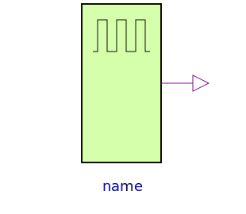

The sources are not taken from Standard Logic. They were added since they turned out to be quite useful, since such sources are often needed. For a better optical overview the colour green was chosen for the sources.
| Name | Description |
|---|---|
| Digital Set Source | |
| Digital Step Source | |
| Digital Tabular Source | |
| Digital Pulse Source | |
|  Clock | Digital Clock Source |